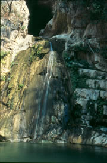
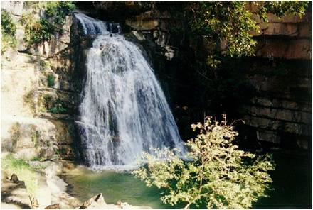
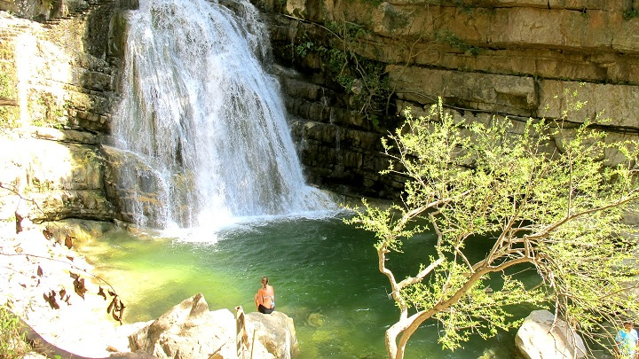
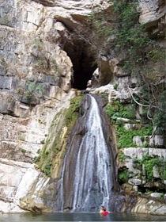
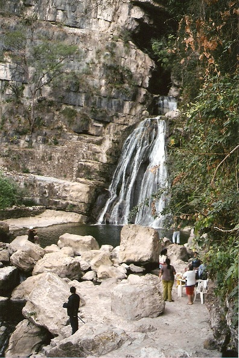

Paraje de belleza natural en el que un arroyo emerge de una gruta, precipitándose en forma de cascada desde una altura de 25 metros; al caer, la cascada forma una serie de albercas naturales enmarcadas por una vegetación de selva mediana compuesta principalmente por árboles de higo y amate (árbol del que los indígenas extraían la pulpa y con ella manufacturaban papel), que trepa por las paredes calcáreas de las montañas que rodean el lugar y fauna como la víbora de cascabel, tlacuache, gato de monte, ardilla. Los grupos étnicos predominantes de esta región son el Zoque, Tzotzil y Tzeltal. En cuanto al clima predomina el cálido sub-húmedo con lluvias en verano; la temperatura media anual es de 26°C teniendo una precipitación pluvial anual de 990 mm.
La cascada se puede visitar todas las estaciones del año, pero se recomienda hacerlo en temporada de secas, esto es de noviembre a marzo. Se sugiere llevar agua para beber y ropa y calzado cómodos para caminatas largasSe ubica en el municipio de Chiapa de Corzo, en la Región Central del estado de Chiapas.
Contacto:
email: elchorreadero@hotmail.com
Teléfono: (+55) 045 961 233 4224
FB: www.facebook.com/cascadaelchorreadero
web: www.cascadaelchorreadero.com.mx
Salir de Tuxtla Gutiérrez. Por la carretera Panamericana No. 190, se recorren 14 Km (aprox. 40 minutos de recorrido) hasta llegar a un desvío de 2 km. que conduce a la entrada de la cascada.
Senderismo, natación, escalada y descenso en rocas, investigación de flora y fauna, exploración en grutas, safari fotográfico, natación y campismo.





posicione el mouse sobre las imágenes